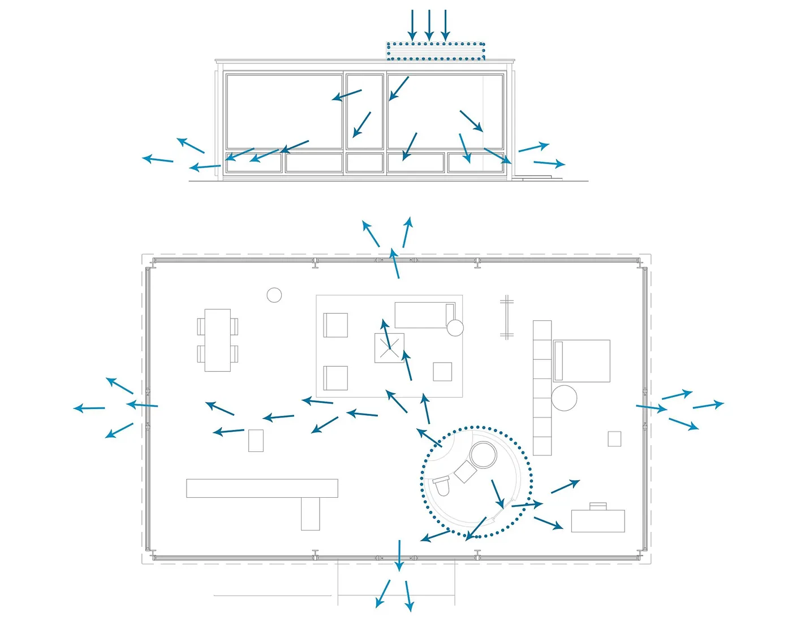
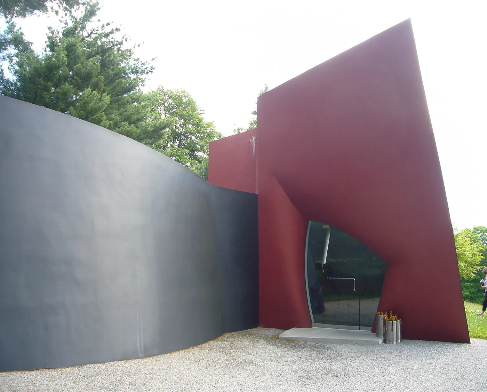
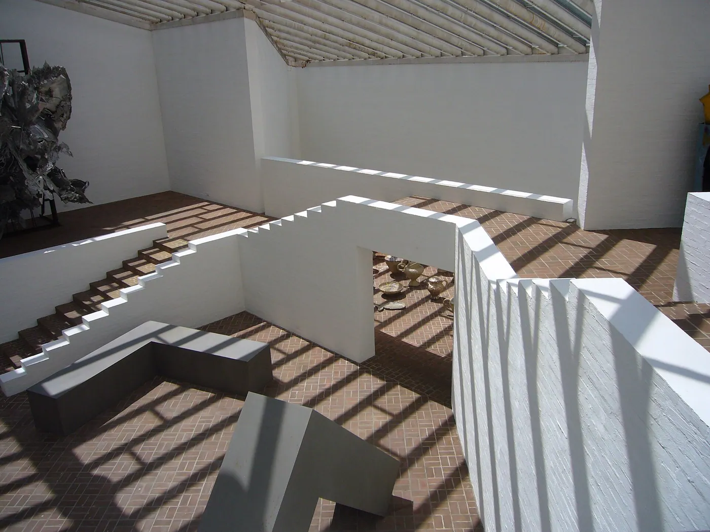
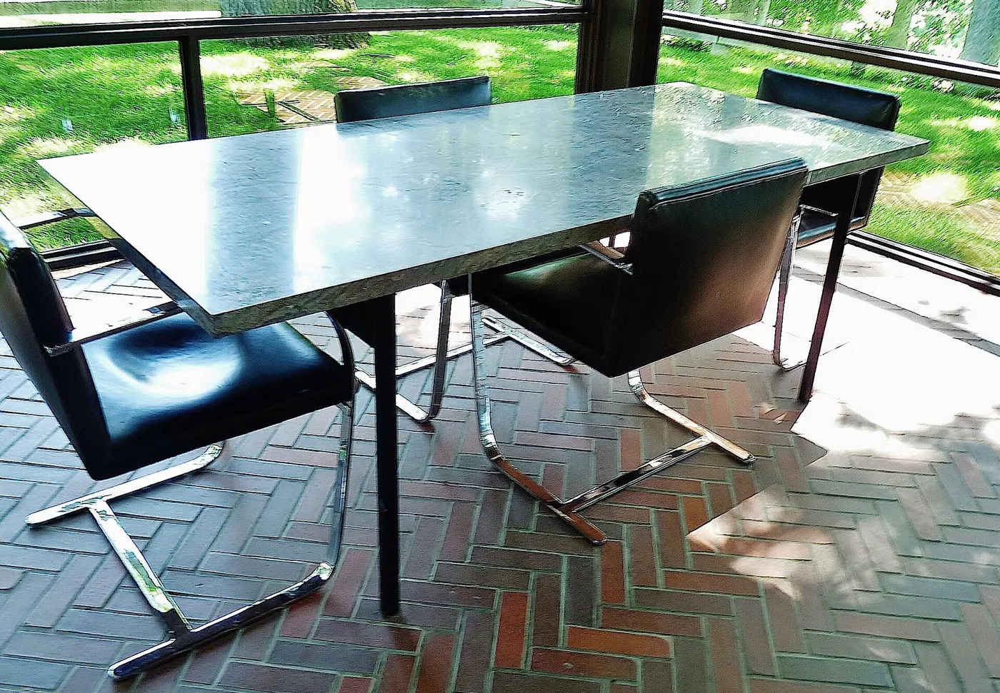
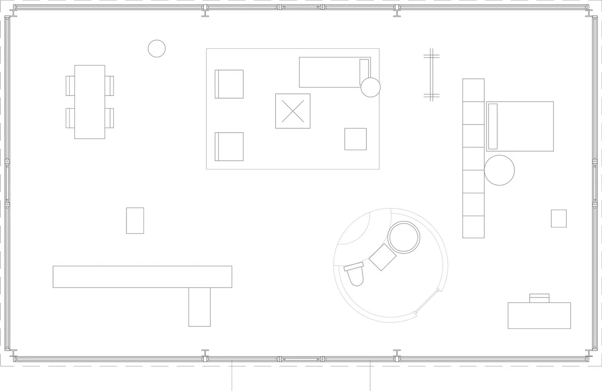

1/8 · Exterior · relacion que existe con la quebradaPhoto: Edelteil · CC BY-SA 3.0 · source

2/8 · Exterior · Glass House (aka Johnson house) in New Canaan, Connecticut, USPhoto: Carol M. Highsmith · Public domain · source

3/8 · Exterior · Glass House by Philip Johnson (exterior) in New Canaan, CT, USAPhoto: Staib · CC BY-SA 3.0 · source4/8 · Exterior · reflejo del vidrioPhoto: Edelteil · CC BY-SA 3.0 · source

5/8 · Interior · The Phillip Johnson Glass House in New Canaan, CTPhoto: Mds08011 · CC BY 4.0 · source

6/8 · InteriorPhoto: A. Latina Brown · CC BY-SA 4.0 · source7/8 · Drawing · A model of the Glass House by architect Philip Johnson in display at the MOMA in NYCPhoto: Petri Krohn at English Wikipedia · CC BY-SA 3.0 · source

8/8 · Drawing · planta de la casaPhoto: Edelteil · CC BY-SA 3.0 · source